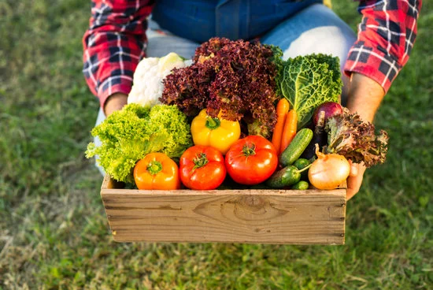

En HuertoHogar cuidamos que nuestros productos no viajen grandes distancias. De hecho, en promedio, cada pedido recorre menos de 150 km desde el campo hasta tu hogar. Esto no solo garantiza que lleguen más frescos y con mejor sabor, sino que también ayuda a reducir la huella de carbono en comparación con productos importados o que pasan por largas cadenas de distribución. Al apoyar a agricultores locales, promovemos la economía regional y reducimos el impacto ambiental. ¡Cada compra que haces ayuda a construir un futuro más sostenible!
Pero no es solo una cuestión de distancia, también es de confianza y calidad. Al trabajar directamente con pequeños y medianos productores, aseguramos que los alimentos provengan de campos donde se cultiva con cuidado, respeto por la tierra y métodos responsables. Cada fruta, verdura o producto que recibes ha pasado por menos intermediarios, lo que significa mayor trazabilidad y transparencia para ti y tu familia.
Además, comprar local significa recuperar el verdadero ritmo de la naturaleza: productos de temporada, cosechados en el momento justo, que conservan mejor sus nutrientes y sabores auténticos. Así, disfrutas de lo mejor de cada estación mientras contribuyes a un modelo de consumo más consciente. Con cada pedido, no solo estás alimentando tu mesa, también estás apoyando a quienes trabajan la tierra con dedicación y fomentando un sistema alimentario más justo, responsable y cercano.